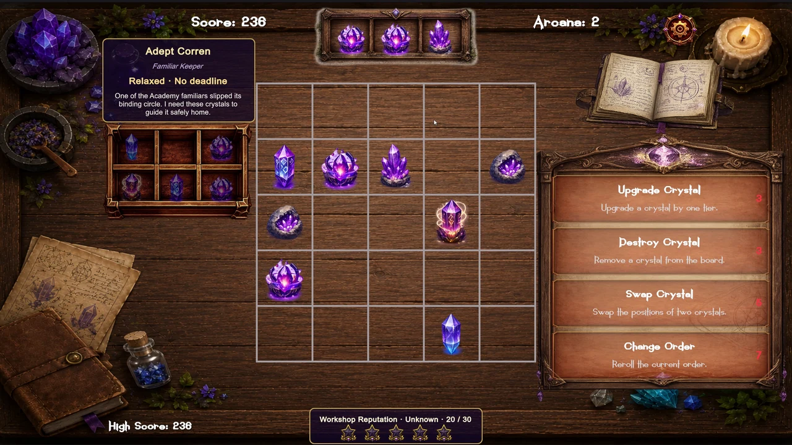
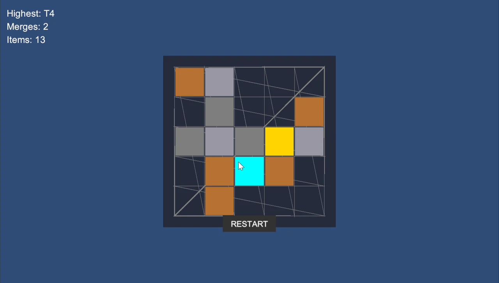
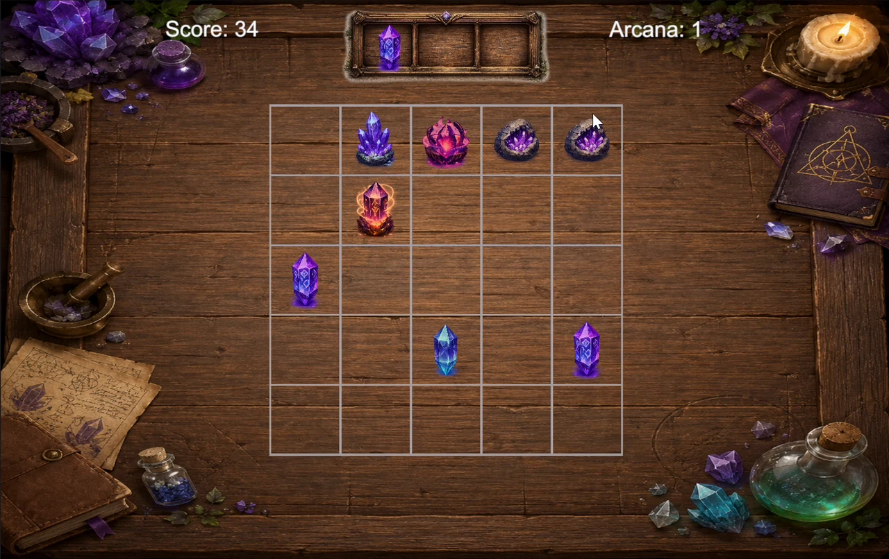
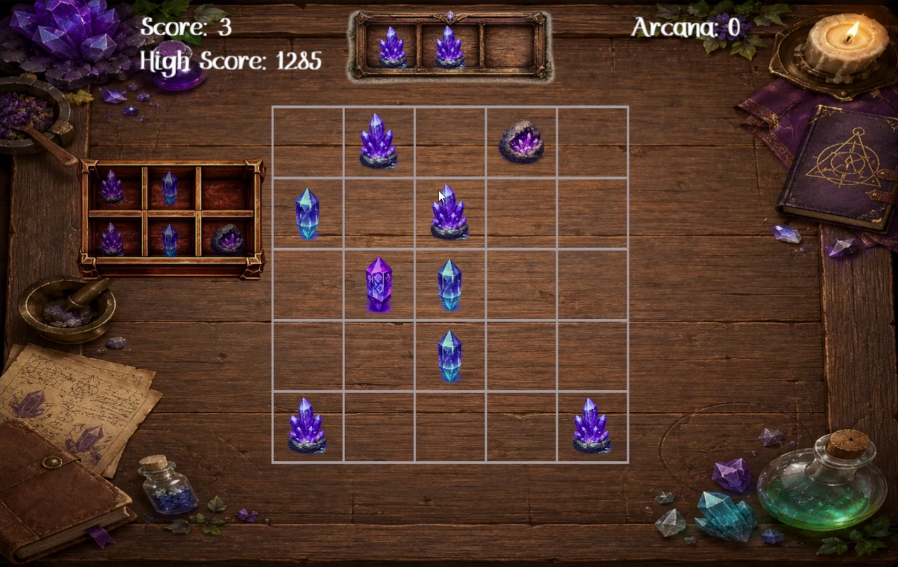
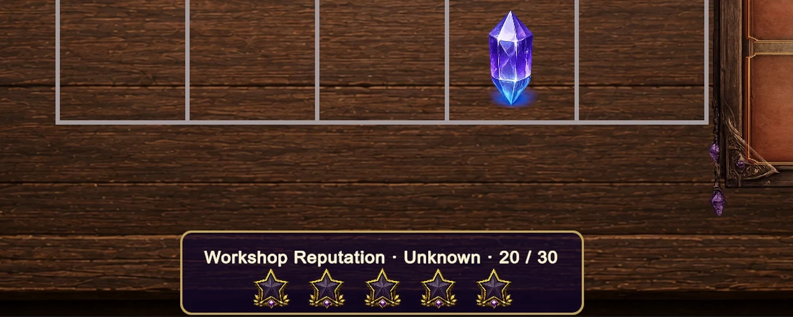
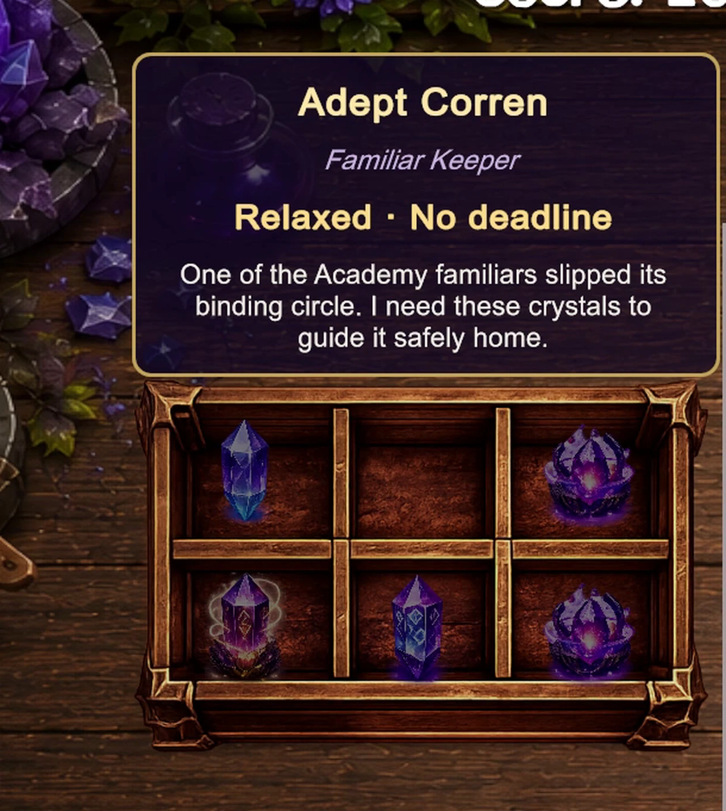

UNITY / C# · MERGE-GAME PROTOTYPE
Merge Alchemy
From a simple merge prototype to a modular game project.
Game Design · Technical Direction · Agentic Development
Merge Alchemy is a casual merge-game prototype developed during an Intermediate Unity Development course. Players manage a small arcane workshop, combining crystals, fulfilling spatial customer orders, and building the workshop's reputation as new challenges emerge.
The project had two parallel goals: designing an engaging game through experimentation and iteration, and transforming an initially AI-generated prototype into a more structured, modular, and extensible Unity project.

- Engine
- Unity / C#
- Context
- Intermediate Unity Development
SBS Games – School - Available
- WebGL · Android APK · Windows
01
My Role
Game design and technical direction
I was responsible for the game's concept, gameplay design, progression systems, and technical direction.
Conversational AI also helped me brainstorm alternatives and evaluate trade-offs. The creative direction and final decisions remained mine. My responsibility was to understand how systems should interact and assess whether implementations met their requirements—not simply request features.
02
Designing the Core Gameplay Loop
1. Initial spatial constraints
The earliest prototype used colored squares on a 5×5 board. Matching-tier items could merge only across orthogonally adjacent cells, producing an item one tier higher in the destination cell. Movement was limited to an adjacent empty cell; diagonal movement and merging were never allowed. These rules remained unchanged throughout development.
Positioning mattered from the start, but a successful merge consumed two items and left one. Without new pieces, the board eventually emptied and gameplay reached a dead end.

2. Incoming queue: a separate source of pressure
Problem: Item generation tied directly to merging could sustain the board numerically without making play more interesting.
Explored alternatives: One random item after every merge kept the item count constant. Five items after a highest-tier merge could fill the board too quickly. I tested spawn quantities, then considered falling items, but rejected the catching mechanic as too stressful for the casual experience I wanted.
Chosen solution: After brainstorming approaches with GPT, I developed a separate three-slot incoming queue that fills over time. Players can place its oldest item into an empty cell; when it overflows, that item is automatically placed on the board.
Gameplay impact: Generation became independent of merging, balancing player control with moderate pressure. A fast player might briefly clear the board and wait for another item, but play no longer reached a permanent dead end. Playtesting and timing adjustments established an enjoyable rhythm before the objective system was developed further.

3. Spatial orders: competing objectives
Problem: The queue sustained play, but merging still lacked a compelling purpose. Orders needed to influence decisions on the board.
Explored alternatives: Simple collection lists could be trivial when common items were available. An external order container would free board space and reduce pressure. Automatically completing orders whenever items appeared somewhere on the board offered too little engagement.
Chosen solution: Players construct patterns of specific items in specific relative positions, anywhere on the board rather than in a fixed order area.
Gameplay impact: Orders interact with the original adjacency rules. Players must choose whether to merge, preserve items for a pattern, reposition them, or leave room for the queue. Board management became strategic rather than simply a search for matching pairs.
The question changed from “Can I merge these items?” to “Should I merge them now?”

03
From Prototype to Architecture
Refactoring while the game evolved
The course began with a functional AI-generated prototype without a comprehensive architectural plan. The exercise was to identify weaknesses and progressively improve the existing codebase, rather than start with an already structured project.
As gameplay requirements grew, I directed changes to responsibilities, dependencies, and reusable systems. Implementations needed to accommodate new requirements without breaking existing behavior. The aim was modularity and extensibility, not simply adding features.
Technical scope
- Software design patterns and architectural principles
- Modular, reusable systems and generic components
- Data-driven design and ScriptableObjects
- Object pooling
- Addressables and asset management
- Event-driven communication and event buses
- UI Toolkit
- Shaders and visual feedback
- AI integration through an external API and a basic server component
Some technologies served immediate gameplay requirements; others were course exercises. The external AI API, for example, inspired dynamic customer flavor text, which later found a stronger purpose within the customer and reputation systems. Technical learning and game design influenced one another rather than following a single feature-first sequence.
04
Connecting the Systems Through Reputation
One progression concept for separate mechanics
The queue and spatial orders established the core loop, but longer-term progression was missing. Inert crystals already existed, yet their original trigger did not fit the game's world. Themes provided variation without much conceptual purpose, and AI-generated customer text needed a meaningful place in the experience.
Shop reputation connected these ideas: completed orders improved the workshop's standing, attracting a wider variety of customers and increasing demand.
- Inert crystals: Production failures could represent mistakes under the pressure of a busier workshop.
- Timed and concurrent orders: Growing demand justified more demanding customers.
- Regional themes: Environmental changes could reflect different regions and customer groups.
- Customer flavor text: Individual customers contributed to the workshop's evolving personality.
Reputation also staged new mechanics instead of presenting every challenge at once. It became a framework connecting difficulty, technical features, and worldbuilding—not just a progression meter.

05
Agentic Development & Technical Direction
Specifications, evaluation, and iteration
I defined expected behavior and edge cases, evaluated proposed implementations, chose architectural approaches, reviewed results, and directed corrections. This required understanding the systems well enough to assess both their behavior and design.
A working feature was not automatically finished: it also needed to fit the game and its evolving architecture. Clear specifications, critical review, and iterative testing helped evaluate interactions, responsibilities, and whether a solution would support further changes.

06
Challenges & Lessons
Each system addressed a different limitation
Adjacency made positioning matter, but did not sustain play. The queue supplied pieces and introduced pressure; spatial orders added competing decisions; reputation connected mechanics and longer-term progression. Functioning mechanics needed complementary objectives to become a coherent game.
Technology needs a purpose in the experience
Not every feature began with a gameplay problem. Course exercises sometimes came first, requiring me to find a meaningful role for the technology rather than leave it as an isolated addition.
Evaluate structure as well as behavior
Improving an intentionally underplanned prototype reinforced the importance of modularity and separation of responsibilities. Directing AI agents required understanding proposed solutions, testing their behavior, and considering long-term implications beyond immediate functionality.
07
Play Merge Alchemy
Step into the workshop.
Merge adjacent matching crystals, build spatial order patterns, manage the incoming queue, and grow your workshop's reputation as new challenges emerge.
Play Merge Alchemy on itch.io ↗Playable in the browser via WebGL. Android APK and Windows downloads available on itch.io.